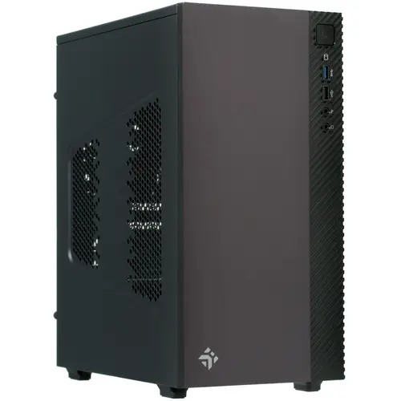
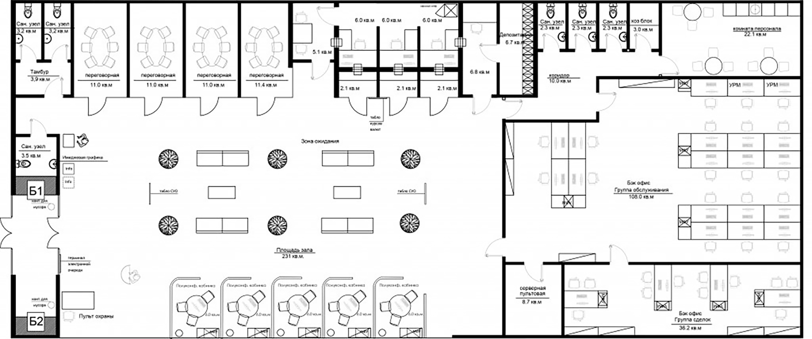
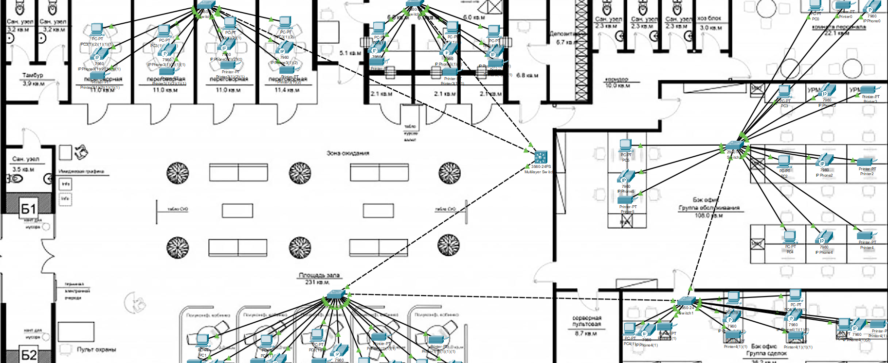

Монтаж ЛВС
Предоставление услуг по монтажу ЛВС
-
Работу выполнили
-
Верстка, Дизайн:
Шеховцов Глеб Евгеньевич
-
Редактура:
Панина Марина Валерьевна
-
-
По заказу
Государственного бюджетного профессионального образовательного учреждения «ВОЛГОГРАДСКИЙ ТЕХНИЧЕСКИЙ КОЛЛЕДЖ»
Поставленная задача
На схеме офиса выбрать подходящую топологию, определить какая топология окажется дешевле. По условию задачи на каждом столе должен быть ПК, принтер и ip-телефон
Характеристики
-
Выбранная Топология
Звезда
-
Кол-во ПК
22
-
Кол-во Маршрутизаторов
5
-
Кол-во Принтеров и Телефонов
44
Используемое ПО
В этом разделе будет описано, используемое ПO, для симуляции работы сети и создания отчёта
-

Cisco Packet Tracer
Cимулятор сети передачи данных, выпускаемый фирмой Cisco Systems. Позволяет делать работоспособные модели сети, настраивать (командами Cisco IOS) маршрутизаторы и коммутаторы, взаимодействовать между несколькими пользователями (через облако).
-

Microsoft Word
Текстовый процессор, предназначенный для создания, просмотра, редактирования и форматирования текстов статей, деловых бумаг, а также иных документов, с локальным применением простейших форм таблично-матричных алгоритмов. Выпускается корпорацией Microsoft в составе пакета Microsoft Office.
-

Microsoft Excel
Программа для работы с электронными таблицами, созданная корпорацией Microsoft для Microsoft Windows, Windows NT и Mac OS, а также Android, iOS и Windows Phone. Она предоставляет возможности экономико-статистических расчетов, графические инструменты и язык макропрограммирования VBA (Visual Basic for Application). Microsoft Excel входит в состав Microsoft Office.
Справочная информация
-
Почему была выбрана топология «Звезда»
Для данного здания лучше всего по производительности и надежности ЛВС подходит топология «Звезда» т.к данная сеть легко расширяется и обладает высокой надежностью, компьютеры независимы от других машин и в случае обрыва кабеля сеть не прекратит свою работу. Сеть можно расширять не отключая её, так же данная топология отличается своей высокой скоростью. Главный её минус это цена и низкая допустимая длинна кабеля.
-
Топология «Звезда»
Звезда — базовая топология компьютерной сети, в которой все компьютеры сети присоединены к центральному узлу (обычно коммутатор), образуя физический сегмент сети. Подобный сегмент сети может функционировать как отдельно, так и в составе сложной сетевой топологии (как правило, «дерево»). Весь обмен информацией идет исключительно через центральный компьютер или агрегат, на который таким способом возлагается очень большая нагрузка, поэтому ничем другим, кроме сети, он заниматься не может. Как правило, именно центральный компьютер или агрегат является самым мощным в сетевом отношении, и именно на него возлагаются все функции по управлению сетью и передаче данных.
-
Топология «Кольцо»
Топология, в которой каждый компьютер соединён линиями связи только с двумя другими: от одного он только получает информацию, а другому только передаёт. На каждой линии связи, как и в случае звезды, работает только один передатчик и один приёмник. Это позволяет отказаться от применения внешних терминаторов. Работа в сети кольца заключается в том, что каждый компьютер ретранслирует (возобновляет) сигнал, то есть выступает в роли повторителя, потому затухание сигнала во всём кольце не имеет никакого значения,важно только затухание между соседними компьютерами кольца. Чётко выделенного центра в этом случае нет, все компьютеры могут быть одинаковыми. Однако достаточно часто в кольце выделяется специальный абонент, который управляет обменом или контролирует обмен. Понятно, что наличие такого управляющего абонента снижает надёжность сети, потому что выход его из строя сразу же парализует весь обмен.
-
Иерархическая Топология
Топология компьютерной сети, в которой каждый узел более высокого уровня связан с узлами более низкого уровня звездообразной связью, образуя комбинацию звезд. Также дерево называют иерархической звездой.Название дерево пришло из теории графов. Первый узел дерева принято называть корнем, следующие узлы высокого уровня — родительскими, а узлы более низкого уровня — дочерними. Таким образом каждый дочерний узел, который имеет связь с более низкими узлами, является для этих узлов родительским.
-
Полносвязная Топология
Топология компьютерной сети, в которой каждая рабочая станция подключена ко всем остальным. Этот вариант является громоздким и неэффективным, несмотря на свою логическую простоту. Для каждой пары должна быть выделена независимая линия, каждый компьютер должен иметь столько коммуникационных портов сколько компьютеров в сети. По этим причинам сеть может иметь только сравнительно небольшие конечные размеры. Чаще всего эта топология используется в многомашинных комплексах или глобальных сетях при малом количестве рабочих станций.
-
Характеристики используемых компьютеров
- 
-
Операционная Система
Windows 10 PRO -
Процессор
Intel Core i3-8100 -
Общий объем ОЗУ
8 ГБ -
Конфигурация SSD Накопителей
240 ГБ -
Модель интегрированной видеокарты
Intel UHD Graphics 630
-
Схема проекта
-
Изначальная схема проекта
 -
Схема проекта с проложенной ЛВС

-